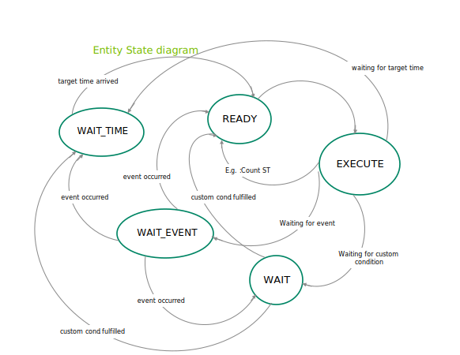
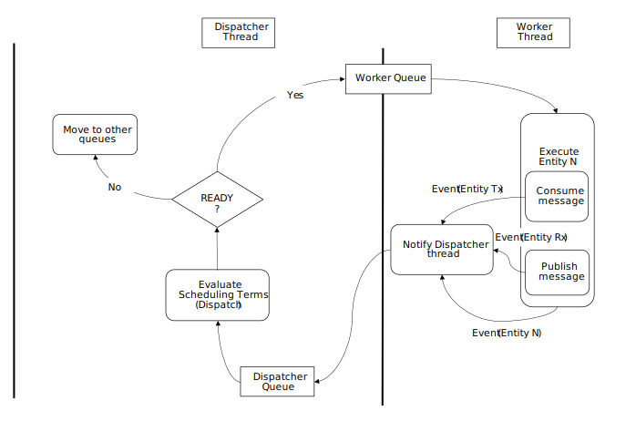

GXF Internals#
This section covers upon the guide that helps in understanding the basic building blocks of GXF One of the key components in the application development is the Codelets and it is important to understand its lifecycle.
LifeCycle of a Codelet#
The life cycle of a codelet is governed by the below five stages
Initialize: Used for light-weight initialization. Called directly when the codelet is created for the first time. Called exactly once over the lifetime of a codelet.
Deinitialize: Used for light-weight deinitialization. Called directly before the codelet is destroyed. Called exactly once over the lifetime of a codelet.
Start: Used for heavy-weight initialization to allocate resources which are necessary for execution. Can be called multiple times over the lifetime of the codelet according to order defined by the lifecycle.
Stop: Used for heavy-weight deinitialization to deallocate all resources which were allocated by the start function. Can be called multiple times over the lifetime of the codelet according to order defined by the lifecycle.
Tick: Called when the codelet is triggered. Triggering can happen when data arrives or based on a time trigger. Normally called many times over the lifetime of a codelet.
Codelet component is used to define a custom codelet that will accomplish the desired work. Below example describes on how to implement a custom codelet. For now please ignore :ref: registerInterface which will covered in the later sections.
class Test : public Codelet { public: gxf_result_t start() override { return GXF_SUCCESS; } gxf_result_t tick() override { // Do Something ... return GXF_SUCCESS; } gxf_result_t stop() override { return GXF_SUCCESS; } gxf_result_t registerInterface(Registrar* registrar) override { Expected<void> result; result &= registrar->parameter(some_parameter_, "Some Parameter"); return ToResultCode(result); } Parameter<Handle<Receiver>> some_parameter_; };
Below example shows on how to create a simple custom codelet that prints “Hello World”
class HelloWorld : public Codelet { public: gxf_result_t start() override { return GXF_SUCCESS; } gxf_result_t tick() override { GXF_LOG_INFO("Hello World from GXF"); return GXF_SUCCESS; } gxf_result_t stop() override { return GXF_SUCCESS; } gxf_result_t registerInterface(Registrar* registrar) override { Expected<void> result; result &= registrar->parameter(some_parameter_, "Some Parameter"); return ToResultCode(result); } Parameter<Handle<Receiver>> some_parameter_; };
Below example explores on how to use the initialize/deinitialize and start/stop stages
class File : public Codelet { public: gxf_result_t initialize() { access_file_ = true; return GXF_SUCCESS; } gxf_result_t start() override { if (access_file_) { file_ = fopen("Some File Name", "Read or Write Mode"); if (file_ == nullptr) { GXF_LOG_ERROR("%s", strerror(errno)); return Unexpected{GXF_FAILURE}; } } return GXF_SUCCESS; } gxf_result_t tick() override { // Do some file operation return GXF_SUCCESS; } gxf_result_t stop() override { const int result = fclose(file_); if (result != 0) { GXF_LOG_ERROR("%s", strerror(errno)); return Unexpected{GXF_FAILURE}; } file_ = nullptr; return GXF_SUCCESS; } gxf_result_t deinitialize() override { access_file_ = false; return GXF_SUCCESS; } gxf_result_t registerInterface(Registrar* registrar) override { Expected<void> result; result &= registrar->parameter(some_parameter_, "Some Parameter"); // Not used here return ToResultCode(result); } Parameter<Handle<Receiver>> some_parameter_; bool access_file_{false}; std::FILE* file_; };
The GXF Scheduler#
The execution of entities in a graph is governed by the scheduler and the scheduling terms associated with every entity. A scheduler is a component responsible for orchestrating the execution of all the entities defined in a graph. A scheduler typically keeps track of the graph entities and their current execution states and passes them on to a nvidia::gxf::EntityExecutor component when ready for execution. The following diagram depicts the flow for an entity execution.

Figure: Entity execution sequence
As shown in the sequence diagram, the schedulers begin executing the graph entities via the nvidia::gxf::System::runAsync_abi() interface and continue this process until it meets the certain ending criteria. A single entity can have multiple codelets. These codelets are executed in the same order in which they were defined in the entity. A failure in execution of any single codelet stops the execution of all the entities. Entities are naturally unscheduled from execution when any one of their scheduling term reaches NEVER state.
Scheduling terms are components used to define the execution readiness of an entity. An entity can have multiple scheduling terms associated with it and each scheduling term represents the state of an entity using SchedulingCondition.
The table below shows various states of nvidia::gxf::SchedulingConditionType described using nvidia::gxf::SchedulingCondition.
SchedulingConditionType |
Description |
|---|---|
NEVER |
Entity will never execute again |
READY |
Entity is ready for execution |
WAIT |
Entity may execute in the future |
WAIT_TIME |
Entity will be ready for execution after specified duration |
WAIT_EVENT |
Entity is waiting on an asynchronous event with unknown time interval |
Schedulers define deadlock as a condition when there are no entities which are in READY, WAIT_TIME or WAIT_EVENT state which guarantee execution at a future point in time. This implies all the entities are in WAIT state for which the scheduler does not know if they ever will reach the READY state in the future. The scheduler can be configured to stop when it reaches such a state using the stop_on_deadlock parameter, else the entities are polled to check if any of them have reached READY state. max_duration config parameter can be used to stop execution of all entities regardless of their state after a specified amount of time has elapsed.
Figure: Entity State transition for all schedulers
There are four types of schedulers currently supported by GXF
Greedy Scheduler
Multithread Scheduler
Epoch Scheduler
Event Based Scheduler
Greedy Scheduler#
This is a basic single threaded scheduler which tests scheduling term greedily. It is great for simple use cases and predictable execution but may incur a large overhead of scheduling term execution, making it unsuitable for large applications. The scheduler requires a clock to keep track of time. Based on the choice of clock the scheduler will execute differently. If a Realtime clock is used the scheduler will execute in real-time. This means pausing execution - sleeping the thread, until periodic scheduling terms are due again. If a ManualClock is used scheduling will happen “time-compressed”. This means flow of time is altered to execute codelets in immediate succession.
The GreedyScheduler maintains a running count of entities which are in READY, WAIT_TIME and WAIT_EVENT states. The following activity diagram depicts the gist of the decision making for scheduling an entity by the greedy scheduler -

Figure: Greedy Scheduler Activity Diagram
Greedy Scheduler Configuration#
The greedy scheduler takes in the following parameters from the configuration file
Parameter name |
Description |
|---|---|
clock |
The clock used by the scheduler to define the flow of time. Typical choices are RealtimeClock or ManualClock |
max_duration_ms |
The maximum duration for which the scheduler will execute (in ms). If not specified, the scheduler will run until all work is done. If periodic terms are present this means the application will run indefinitely |
stop_on_deadlock |
If stop_on_deadlock is disabled, the GreedyScheduler constantly polls for the status of all the waiting entities to check if any of them are ready for execution. |
Example usage - The following code snippet configures a Greedy scheduler with a ManualClock option specified.
name: scheduler
components:
- type: nvidia::gxf::GreedyScheduler
parameters:
max_duration_ms: 3000
clock: misc/clock
stop_on_deadlock: true
---
name: misc
components:
- name: clock
type: nvidia::gxf::ManualClock
Multithread Scheduler#
The MultiThread scheduler is more suitable for large applications with complex execution patterns. The scheduler consists of a dispatcher thread which checks the status of an entity and dispatches it to a thread pool of worker threads responsible for executing them. Worker threads enqueue the entity back on to the dispatch queue upon completion of execution. The number of worker threads can be configured using worker_thread_number parameter. The MultiThread scheduler also manages a dedicated queue and thread to handle asynchronous events. The following activity diagram demonstrates the gist of the multithread scheduler implementation.

Figure: MultiThread Scheduler Activity Diagram
As depicted in the diagram, when an entity reaches WAIT_EVENT state, it’s moved to a queue where they wait to receive event done notification. The asynchronous event handler thread is responsible for moving entities to the dispatcher upon receiving event done notification. The dispatcher thread also maintains a running count of the number of entities in READY, WAIT_EVENT and WAIT_TIME states and uses these statistics to check if the scheduler has reached a deadlock. The scheduler also needs a clock component to keep track of time and it is configured using the clock parameter.
MultiThread scheduler is more resource efficient compared to the Greedy Scheduler and does not incur any additional overhead for constantly polling the states of scheduling terms. The check_recession_period_ms parameter can be used to configure the time interval the scheduler must wait to poll the state of entities which are in WAIT state.
Multithread Scheduler Configuration#
The multithread scheduler takes in the following parameters from the configuration file
Parameter name |
Description |
|---|---|
clock |
The clock used by the scheduler to define the flow of time. Typical choices are RealtimeClock or ManualClock. |
max_duration_ms |
The maximum duration for which the scheduler will execute (in ms). If not specified, the scheduler will run until all work is done. If periodic terms are present this means the application will run indefinitely. |
check_recess_period_ms |
Duration to sleep before checking the condition of an entity again [ms]. This is the maximum duration for which the scheduler would wait when an entity is not yet ready to run. |
stop_on_deadlock |
If enabled the scheduler will stop when all entities are in a waiting state, but no periodic entity exists to break the dead end. Should be disabled when scheduling conditions can be changed by external actors, for example by clearing queues manually. |
worker_thread_number |
Number of threads. |
Example usage - The following code snippet configures a Multithread scheduler with the number of worked threads and max duration specified -
name: scheduler
components:
- type: nvidia::gxf::MultiThreadScheduler
parameters:
max_duration_ms: 5000
clock: misc/clock
worker_thread_number: 5
check_recession_period_ms: 3
stop_on_deadlock: false
---
name: misc
components:
- name: clock
type: nvidia::gxf::RealtimeClock
Event Based Scheduler#
The Event Based scheduler is more suitable for large applications with complex execution patterns. This scheduler maintains three different queues holding entities in READY or WAIT_TIME, WAIT_EVENT and WAIT states. An event is defined as a change in the scheduling term of any entity which can be triggered either by expiration of a time duration, execution of an entity, API called by a user thread, message transmission across the edges, etc. Events are generated at the end of an entity execution, or after change in state of scheduling conditions. In addition, the event-based scheduler launches several worker threads , async event handler thread and a dispatcher thread. Worker threads pop entities from the READY or WAIT_TIME queue and acquire them for execution. After the execution is complete, the worker thread generates an event. The dispatcher thread responds to events by moving entities from one queue to another by evaluating their scheduling condition. The async event handler thread responds to external events. The dispatcher thread and async event handler thread sleep between events thus saving CPU cycles. The number of worker threads can be configured using worker_thread_number parameter.
Messaging and Events#
Components communicate with each other to accomplish the defined pipeline. Messages are the form of communication by components with each other. Entities have transmitter and receiver queues in order to transmit and receive messages. The transmitter of an upstream entity is connected to the receiver of a downstream entity. GXF allows M × N connections between transmitters and receivers where M is the number of transmitters and N is the number of receivers. After a component consumes a message from its receiver queue, an event is generated to notify the upstream entity so that it can evaluate its scheduling terms and allow a change in its scheduling condition. Similarly, when a component publishes a message to a downstream entity , it generates an event to notifies the entity. The dispatcher thread is responsible for processing the event and evaluating the scheduling terms. This operation is called dispatching an entity.
Figure: Messaging Events Activity Diagram
The dispatcher thread also maintains a running count of the number of entities in READY, WAIT_EVENT and WAIT_TIME states and uses these statistics to check if the scheduler has reached a deadlock. The scheduler also needs a clock component to keep track of time and it is configured using the clock parameter.
Event Based Scheduler Configuration#
The Event Based scheduler takes in the following parameters from the configuration file
Parameter name |
Description |
|---|---|
clock |
The clock used by the scheduler to define the flow of time. Typical choices are RealtimeClock or ManualClock. |
max_duration_ms |
The maximum duration for which the scheduler will execute (in ms). If not specified, the scheduler will run until all work is done. If periodic terms are present this means the application will run indefinitely. |
stop_on_deadlock |
If enabled the scheduler will stop when all entities are in a waiting state, but no periodic entity exists to break the dead end. Should be disabled when scheduling conditions can be changed by external actors, for example by clearing queues manually. |
worker_thread_number |
Number of threads. |
thread_pool_allocation_auto |
If enabled, only one thread pool will be created. If disabled, user should enumerate pools and priorities. |
stop_on_deadlock_timeout |
Scheduler will wait this amount of time when stop_on_dead_lock indicates should stop. It will reset if a job comes in during the wait. Negative value means not stop on deadlock. |
Example usage - The following code snippet configures a Event Based scheduler with the number of worked threads and max duration specified -
name: scheduler
components:
- type: nvidia::gxf::EventBasedScheduler
parameters:
max_duration_ms: 5000
clock: misc/clock
stop_on_deadlock: false
worker_thread_number: 5
thread_pool_allocation_auto: true
stop_on_deadlock_timeout: 500
---
name: misc
components:
- name: clock
type: nvidia::gxf::RealtimeClock
Epoch Scheduler#
The Epoch scheduler is used for running loads in externally managed threads. Each run is called an Epoch. The scheduler goes over all entities that are known to be active and executes them one by one. If the epoch budget is provided (in ms), it would keep running all codelets until the budget is consumed or no codelet is ready. It might run over budget since it guarantees to cover all codelets in epoch. In case the budget is not provided, it would go over all the codelets once and execute them only once.
The epoch scheduler takes in the following parameters from the configuration file -
Parameter name |
Description |
|---|---|
clock |
The clock used by the scheduler to define the flow of time. Typical choice is a RealtimeClock. |
Example usage - The following code snippet configures an Epoch scheduler -
name: scheduler
components:
- name: clock
type: nvidia::gxf::RealtimeClock
- name: epoch
type: nvidia::gxf::EpochScheduler
parameters:
clock: clock
Note that the epoch scheduler is intended to run from an external thread. The runEpoch(float budget_ms); can be used to set the budget_ms and run the scheduler from the external thread. If the specified budget is not positive, all the nodes are executed once.
SchedulingTerms#
A SchedulingTerm defines a specific condition that is used by an entity to let the scheduler know when it’s ready for execution. There are various scheduling terms currently supported by GXF. If multiple scheduling terms are present in an entity they all have to be true for an entity to execute.
PeriodicSchedulingTerm#
An entity associated with nvidia::gxf::PeriodicSchedulingTerm is ready for execution after periodic time intervals specified using its recess_period parameter. The PeriodicSchedulingTerm can either be in READY or WAIT_TIME state.
Example usage -
- name: scheduling_term
type: nvidia::gxf::PeriodicSchedulingTerm
parameters:
recess_period: 50000000
CountSchedulingTerm#
An entity associated with nvidia::gxf::CountSchedulingTerm is executed for a specific number of times specified using its count parameter. The CountSchedulingTerm can either be in READY or NEVER state. The scheduling term reaches the NEVER state when the entity has been executed count number of times.
Example usage -
- name: scheduling_term
type: nvidia::gxf::CountSchedulingTerm
parameters:
count: 42
MessageAvailableSchedulingTerm#
An entity associated with nvidia::gxf::MessageAvailableSchedulingTerm is executed when the associated receiver queue has at least a certain number of elements.
The receiver is specified using the receiver parameter of the scheduling term. The minimum number of messages that permits the execution of the entity is specified by min_size. An optional parameter for this scheduling term is front_stage_max_size, the maximum front stage message count. If this parameter is set, the scheduling term will only allow execution if the number of messages in the queue does not exceed this count. It can be used for codelets which do not consume all messages from the queue.
In the example shown below, the minimum size of the queue is configured to be 4. So, the entity will not be executed till there are at least 4 messages in the queue.
- type: nvidia::gxf::MessageAvailableSchedulingTerm
parameters:
receiver: tensors
min_size: 4
MultiMessageAvailableSchedulingTerm#
An entity associated with nvidia::gxf::MultiMessageAvailableSchedulingTerm is executed when a list of provided input receivers combined have at least a given number of messages. The receivers parameter is used to specify a list of the input channels/receivers. The minimum number of messages needed to permit the entity execution is set by min_size parameter.
Consider the example shown below. The associated entity will be executed when the number of messages combined for all the three receivers is at least the min_size, i.e. 5.
- name: input_1
type: nvidia::gxf::test::MockReceiver
parameters:
max_capacity: 10
- name: input_2
type: nvidia::gxf::test::MockReceiver
parameters:
max_capacity: 10
- name: input_3
type: nvidia::gxf::test::MockReceiver
parameters:
max_capacity: 10
- type: nvidia::gxf::MultiMessageAvailableSchedulingTerm
parameters:
receivers: [input_1, input_2, input_3]
min_size: 5
BooleanSchedulingTerm#
An entity associated with nvidia::gxf::BooleanSchedulingTerm is executed when its internal state is set to tick. The parameter enable_tick is used to control the entity execution. The scheduling term also has two APIs enable_tick() and disable_tick() to toggle its internal state. The entity execution can be controlled by calling these APIs. If enable_tick is set to false, the entity is not executed (Scheduling condition is set to NEVER). If enable_tick is set to true, the entity will be executed (Scheduling condition is set to READY). Entities can toggle the state of the scheduling term by maintaining a handle to it.
Example usage -
- type: nvidia::gxf::BooleanSchedulingTerm
parameters:
enable_tick: true
AsynchronousSchedulingTerm#
AsynchronousSchedulingTerm is primarily associated with entities which are working with asynchronous events happening outside of their regular execution performed by the scheduler. Since these events are non-periodic in nature, AsynchronousSchedulingTerm prevents the scheduler from polling the entity for its status regularly and reduces CPU utilization. AsynchronousSchedulingTerm can either be in READY, WAIT, WAIT_EVENT or NEVER states based on asynchronous event it’s waiting on.
The state of an asynchronous event is described using nvidia::gxf::AsynchronousEventState and is updated using the setEventState API.
AsynchronousEventState |
Description |
|---|---|
READY |
Init state, first tick is pending |
WAIT |
Request to async service yet to be sent, nothing to do but wait |
EVENT_WAITING |
Request sent to an async service, pending event done notification |
EVENT_DONE |
Event done notification received, entity ready to be ticked |
EVENT_NEVER |
Entity does not want to be ticked again, end of execution |
Entities associated with this scheduling term most likely have an asynchronous thread which can update the state of the scheduling term outside of it’s regular execution cycle performed by the gxf scheduler. When the scheduling term is in WAIT state, the scheduler regularly polls for the state of the entity. When the scheduling term is in EVENT_WAITING state, schedulers will not check the status of the entity again until they receive an event notification which can be triggered using the GxfEntityEventNotify api. Setting the state of the scheduling term to EVENT_DONE automatically sends this notification to the scheduler. Entities can use the EVENT_NEVER state to indicate the end of its execution cycle.
Example usage -
- name: async_scheduling_term
type: nvidia::gxf::AsynchronousSchedulingTerm
DownstreamReceptiveSchedulingTerm#
This scheduling term specifies that an entity shall be executed if the receiver for a given transmitter can accept new messages.
Example usage -
- name: downstream_st
type: nvidia::gxf::DownstreamReceptiveSchedulingTerm
parameters:
transmitter: output
min_size: 1
TargetTimeSchedulingTerm#
This scheduling term permits execution at a user-specified timestamp. The timestamp is specified on the clock provided.
Example usage -
- name: target_st
type: nvidia::gxf::TargetTimeSchedulingTerm
parameters:
clock: clock/manual_clock
ExpiringMessageAvailableSchedulingTerm#
This scheduling waits for a specified number of messages in the receiver. The entity is executed when the first message received in the queue is expiring or when there are enough messages in the queue. The receiver parameter is used to set the receiver to watch on. The parameters max_batch_size and max_delay_ns dictate the maximum number of messages to be batched together and the maximum delay from first message to wait before executing the entity respectively.
In the example shown below, the associated entity will be executed when the number of messages in the queue is greater than max_batch_size, i.e 5, or when the delay from the first message to current time is greater than max_delay_ns, i.e 10000000.
- name: target_st
type: nvidia::gxf::ExpiringMessageAvailableSchedulingTerm
parameters:
receiver: signal
max_batch_size: 5
max_delay_ns: 10000000
clock: misc/clock
MessageAvailableFrequencyThrottler#
A scheduling term which lets an entity maintain a specific execution (min) frequency. The scheduling term will also monitor messages incoming via multiple receivers and switch to READY state if any messages are available.
- type: nvidia::gxf::MessageAvailableFrequencyThrottler
parameters:
receivers: [receiver_0, receiver_1]
execution_frequency: 100Hz
min_sum: 1
sampling_mode: SumOfAll
MemoryAvailableSchedulingTerm#
A scheduling term which waits until a given number of blocks are available in a pool. This can be used to force a codelet to wait until a minimum number of its in-flight buffers have returned from downstream consumers.
- type: nvidia::gxf::MemoryAvailableSchedulingTerm
parameters:
allocator: allocator
min_bytes: 256
min_blocks: 1024
BTSchedulingTerm#
A BT (Behavior Tree) scheduling term is used to schedule a behavior tree entity itself and its child entities (if any) in a Behavior tree.
Example usage -
name: root
components:
- name: root_controller
type: nvidia::gxf::EntityCountFailureRepeatController
parameters:
max_repeat_count: 0
- name: root_st
type: nvidia::gxf::BTSchedulingTerm
parameters:
is_root: true
- name: root_codelet
type: nvidia::gxf::SequenceBehavior
parameters:
children: [ child1/child1_st ]
s_term: root_st
controller: root_controller
Combining SchedulingTerms#
An entity can be associated with multiple scheduling terms which define it’s execution behavior. Scheduling terms are AND combined to describe the current state of an entity. For an entity to be executed by the scheduler, all the scheduling terms must be in READY state and conversely, the entity is unscheduled from execution whenever any one of the scheduling term reaches NEVER state. The priority of various states during AND combine follows the order NEVER, WAIT_EVENT, WAIT, WAIT_TIME, and READY.
Example usage -
components:
- name: integers
type: nvidia::gxf::DoubleBufferTransmitter
- name: fibonacci
type: nvidia::gxf::DoubleBufferTransmitter
- type: nvidia::gxf::CountSchedulingTerm
parameters:
count: 100
- type: nvidia::gxf::DownstreamReceptiveSchedulingTerm
parameters:
transmitter: integers
min_size: 1
Cuda based scheduling terms#
Producer codelets based on cuda based processing can queue in the jobs to the cuda stream without waiting for the jobs to be complete. The consumers can wait for the availability of the data with the help of below two described scheduling terms.
Cuda Stream SchedulingTerm#
CudaStreamSchedulingTerm specifies the availability of data at the receiver on completion of the work on the provided cuda stream with the help of callback function to host.
This scheduling term will register a call back function which will be called once the work on the specified cuda stream completes indicating that the data is available for consumption.
Example usage -
components:
- type: nvidia::gxf::CudaStreamSchedulingTerm
parameters:
receiver: rx0
- type: nvidia::gxf::MessageAvailableSchedulingTerm
parameters:
receiver: rx1
min_size: 1
Cuda Event SchedulingTerm#
CudaEventSchedulingTerm specifies the availability of data at the receiver on completion of the work on the provided cuda stream with the help of cuda event. This scheduling term will keep polling on the event provided to check for data availability for consumption.
Example usage -
components:
- type: nvidia::gxf::CudaEventSchedulingTerm
parameters:
receiver: rx0
- type: nvidia::gxf::MessageAvailableSchedulingTerm
parameters:
receiver: rx1
min_size: 1
Connection Topologies#
GXF supports creating multiple connection topologies between graph entities.
1 : 1 Connection
The simplest connection between a single transmitter and a single receiver. The underlying codelets have either a Handle<Transmitter>
and Handle<Receiver> as the registered parameter.

1 : m Connection
A single transmitter can be connected to a single receiver and vice-versa. The underlying codelets have either a Handle<Transmitter>
and Handle<Receiver> as the registered parameter.

Multiple 1 : 1 Connections
A 1 : m connection can alternatively be realized by creating multiple 1 : 1 connections. In this scenario, the underlying codelet in
the receiver entity must have either a std::vector<Handle<Receiver>> or std::Array<Handle<Receiver>, N> parameter.
The same is applicable to m : 1 connections as well. Each 1 : 1 connection will have its own scheduling terms to monitor the
incoming and outgoing message queues.

Messages#
In the GXF graph, many a times Codelets may have to communicate with each other to accomplish
the defined pipeline. Messages are the form of communication by codelets with each other.
When publishing, a message will always have an associated Timestamp component with the name “timestamp”.
If the user doesn’t add it, it will automatically be added when the entity is published.
A Timestamp component contains two different time values (See the gxf/std/timestamp.hpp header file for more information.):
1. acqtime - This is the time when the message entity is acquired, for instance, this would generally
be the driver time of the camera when it captures an image. You must provide this timestamp if you are publishing a message in a codelet.
1. pubtime - This is the time when the message entity is published by a node in the graph. This
will automatically get updated using the clock of the scheduler.
Transmitter is used for transmitting the message and Receiver is used for receiving the message. Messages are transmitted or received at tick() of codelet.
Transmitter#
All the messages from the transmitter are sent as an entity. The transmitter after encapsulating the
message will give a publish() call which will send the message to target recipient.
In a codelet, when publishing message entities using a Transmitter (tx), there are two ways to add
the required Timestamp:
1. tx.publish(Entity message): You can manually add a component of type Timestamp with the name
“timestamp” and set the acqtime. The pubtime in this case should be set to 0. The message is
published using the publish(Entity message). This will be deprecated in
the next release.
2. tx.publish(Entity message, int64_t acqtime): You can simply call
publish(Entity message, int64_t acqtime) with the acqtime. Timestamp will be added automatically.
Receiver#
All the messages from the transmitter are received as an entity. The receiver on getting a tick()
call will give a receive() call that helps in receiving the message.
Below is an example of transmitter and receiver
Transmitter Example#
gxf_result_t PingTx::tick() {
Expected<Entity> message = Entity::New(context());
if (!message) {
GXF_LOG_ERROR("Failure creating message entity.");
return message.error();
}
auto int_value = message.value().add<int32_t>("Integer");
auto value = int_value.value();
*value = 9999;
auto result = signal_->publish(message.value());
GXF_LOG_INFO("Message Sent: int_value = %d", *value);
return ToResultCode(message);
}
Receiver Example#
gxf_result_t PingRx::tick() {
auto message = signal_->receive();
if (!message || message.value().is_null()) {
return GXF_CONTRACT_MESSAGE_NOT_AVAILABLE;
}
auto value = message.value();
auto rx_value = message->findAll<int32_t>();
GXF_LOG_INFO("Message Received: rx_value = %d", *(rx_value->at(0).value()));
return GXF_SUCCESS;
}
Memory Management#
GXF provides a way for allocation and de-allocation of memory that would be required by the codelets. There are various types of memory allocation that are provided as mentioned below.
System Memory Allocates specified bytes of system memory which typically would make use of underlying OS calls for allocation of requested memory.
Host Memory Allocates specified bytes of host memory that is page-locked and accessible to the device. Allocating excessive amounts of memory with cudaMallocHost() may degrade system performance, since it reduces the amount of memory available to the system for paging. This memory is best used sparingly to allocate staging areas for data exchange between host and device.
Device Memory Allocates specified bytes of device memory.
GXF provides a component called nvidia::gxf::BlockMemoryPool which is used to allocate memory
in multiple/single blocks of same size which can be specified as parameters.
Below example specifies on how to allocate host memory
- name: host_memory_pool
type: nvidia::gxf::BlockMemoryPool
parameters:
storage_type: 0 # host memory
block_size: 1024
num_blocks: 5
Below example specifies on how to allocate device memory
- name: cuda_device_memory_pool
type: nvidia::gxf::BlockMemoryPool
parameters:
storage_type: 1 # device memory
block_size: 1024
num_blocks: 5
Below example specifies on how to allocate system memory
- name: system_memory_pool
type: nvidia::gxf::BlockMemoryPool
parameters:
storage_type: 2 # system memory
block_size: 1024
num_blocks: 5
Below example specifies on how to use allocator with codelets
- name: host_memory_pool
type: nvidia::gxf::BlockMemoryPool
parameters:
storage_type: 0 # host memory
block_size: 1024
num_blocks: 5
- name: cuda_device_memory_pool
type: nvidia::gxf::BlockMemoryPool
parameters:
storage_type: 1 # device memory
block_size: 1024
num_blocks: 5
- name: generator
type: nvidia::gxf::test::cuda::StreamTensorGenerator
parameters:
cuda_tensor_pool: cuda_device_memory_pool
host_tensor_pool: host_memory_pool
Cuda Stream Order Allocator#
GXF provides a way for allocation and de-allocation of memory using native Cuda API in stream ordered approach that would be required by the codelets. There is only device memory allocation type which is supported as mentioned below.
Device Memory : Allocates device memory in stream ordered approach. This stream-ordered allocation ensures that the memory operations are properly synchronized with other GPU operations in the same stream. This allocation method utilizes CUDA’s asynchronous memory management functions, specifically cudaMallocAsync and cudaFreeAsync, to allocate and deallocate memory respectively.
GXF provides a component called nvidia::gxf::StreamOrderedAllocator which is used to allocate/deallocate device
memory in stream ordered approach. This component enables efficient and stream-ordered memory allocation for GPU operations
within the GXF ecosystem.
Below example specifies on how to allocate device memory. The memory allocation type supported here is Device Memory.
- name: device_memory_pool
type: nvidia::gxf::StreamOrderedAllocator
parameters:
device_memory_initial_size: "32KB" # 32 KB initial pool size
device_max_memory_pool_size: "64MB" # 64 MB max pool size
RMM: RAPIDS Memory Manager#
GXF provides a way for allocation and de-allocation of memory that would be required by the codelets using RMM. There are various types of memory allocation that are provided as mentioned below.
Host Memory : Allocates specified bytes of pinned host memory that is page-locked and accessible to the device. It takes advantage of RMM’s pool allocation strategy for better performance
Device Memory : Allocates specified bytes of device memory in stream ordered approach. This stream-ordered allocation ensures that the memory operations are properly synchronized with other GPU operations in the same stream.
GXF provides a component called nvidia::gxf::RMMAllocator which is used to allocate/deallocate memory
using Rapids Memory Manager (RMM). This component enables efficient and stream-ordered memory
allocation for GPU operations within the GXF ecosystem.
Below example specifies on how to allocate host/device memory. The memory allocation strategy is determined by the parameter value passed to the allocation function. Depending on this value, the function decides whether to allocate memory on the host or on the device.
- name: memory_pool
type: nvidia::gxf::RMMAllocator
parameters:
device_memory_initial_size: "32B" # 32 bytes initial pool size
host_memory_initial_size: "32KB" # 32 KB initial pool size
device_max_memory_pool_size: "64MB" # 64 MB max pool size
host_memory_max_size: "64GB" # 64 GB max pool size
Distributed Execution#
Segment is a group of graph entities created in a single GXF runtime context. A segment will have its own scheduler. Graph entities in a segment are connected with each other via double buffer transmitter and receiver components. A segment is connected to other segments via ucx transmitters and receivers. The connected pair of segments can run in two remote processes, or within the same process.
The execution of segment is governed by the graph worker and the graph driver.
The graph worker is a nvidia::gxf::System component responsible for orchestrating the execution
of each segment configured to this worker. The graph worker provides and manages
threads for each segment to run, and communicates with the graph driver to determine
the life cycle of each segment.
The graph worker and driver are GXF System components, that blocks main thread during its life cycle and spawns its own threads for execution. It’s very similar to GXF schedulers in a way that, each scheduler orchestrates one GXF runtime from inside; whereas graph worker orchestrate one or multiple GXF runtimes from outside. The graph driver orchestrates one or more graph workers to go through the execution sequence.
Both graph worker and graph driver consists of an IPC server and an IPC client. The IPC server’s services are implemented within graph worker and graph driver respectively. These IPC services are exposed via the IPC server, that a corresponding IPC client on remote process can call. graph worker’s IPC client sends remote request to graph driver’s services; graph driver’s IPC client sends remote request to graph worker’s services.
GraphWorker#
Graph worker implements a series of IPC services to handle different steps in running a graph segment. Calling on these IPC services via the IPC server like Http or Grpc triggers these steps. Each IPC service ultimately translates a non-blocking IPC call to enqueuing an event.
The threading of graph worker is based on an event-based queue thread, and a table of segment runners.

Figure: Graph worker execution sequence
As shown in the sequence diagram, the caller main thread starts graph worker in 4 steps.
register the series of IPC services and start the server;
start the event-based queue thread;
enqueue event to instantiate the table of segment runners;
enqueue event to request communication with graph driver. Then the caller main thread gets blocked waiting for completion of graph worker.
Graph worker’s first communication to graph driver is to register all segments along with their address info, eg IP and port. When graph driver discovers all segments, it possesses global knowledge of all segments and their addresses. It is graph driver to resolve the UCX connections between all segment pairs, and for each pair spread UCX receiver addresses to UCX transmitter via the graph worker.
Example graph worker entity:

Figure: Entity containing GraphWorker and its dependency
---
name: worker_entity
components:
- name: graph_worker
type: nvidia::gxf::GraphWorker
parameters:
server: this_worker_server
client: client_to_remote_driver
graph-specs:
ucx_upstream:
app-path: gxf/ucx/tests/test_ping_ucx_tx.yaml
manifest-path: gxf/test/distributed/test_graph_worker_manifest.yaml
severity: 4
ucx_downstream:
app-path: gxf/ucx/tests/test_ping_ucx_rx.yaml
manifest-path: gxf/test/distributed/test_graph_worker_manifest.yaml
severity: 4
- name: this_worker_server
type: nvidia::gxf::HttpServer
parameters:
port: 50001
remote_access: 'True'
- name: client_to_remote_driver
type: nvidia::gxf::HttpIPCClient
parameters:
server_ip_address: localhost
port: 50000
GraphDriver#
Graph driver implements a series of IPC services to handle different steps in discovering all segments in their graph workers; and resolving segments UCX connection addresses. Calling on these IPC services via the IPC server like Http or Grpc triggers these steps. Each IPC service ultimately translates a non-blocking IPC call to enqueuing an event.
The threading of graph driver is based on an event-based queue thread.

Figure: Graph driver execution sequence
As shown in the sequence diagram, the caller main thread starts graph driver in 3 steps.
read the global segment connection map configuration file;
register the series of IPC services and start the server;
start the event-based queue thread. Then the caller main thread gets blocked waiting for completion of graph driver.
After startup, graph driver listens to requests from all graph workers. Upon each graph worker startup, it sends request to the graph driver to report its segments and address info. Graph driver is expected to starts before all graph workers. However if graph worker starts before graph driver, it keeps re-trying the request for a configurable times.
Example graph driver entity:

Figure: Entity containing GraphDriver and its dependency
---
name: driver
components:
- name: driver_server
type: nvidia::gxf::HttpServer
parameters:
port: 50000
- name: driver_client
type: nvidia::gxf::HttpIPCClient
- name: graph_driver
type: nvidia::gxf::GraphDriver
parameters:
server: driver_server
client: driver_client
connections:
- source: ucx_upstream.tx.signal
target: ucx_downstream.rx.signal
Logging#
GXF logging macros are automatically included when implementing a codelet. The usage is similar to printf(), but they will also print file name and line numbers. See example usage in the sample extension section.
-
GXF_LOG_VERBOSE(...)#
Example:
GXF_LOG_VERBOSE("This is a test message, codelet eid %ld, cid %ld, name %s", eid(), cid(), name());
-
GXF_LOG_DEBUG(...)#
Example:
GXF_LOG_DEBUG("This is a test message, codelet eid %ld, cid %ld, name %s", eid(), cid(), name());
-
GXF_LOG_INFO(...)#
Example:
GXF_LOG_INFO("This is a test message, codelet eid %ld, cid %ld, name %s", eid(), cid(), name());
-
GXF_LOG_WARNING(...)#
Example:
GXF_LOG_WARNING("This is a test message, codelet eid %ld, cid %ld, name %s", eid(), cid(), name());
-
GXF_LOG_ERROR(...)#
Example:
GXF_LOG_ERROR("This is a test message, codelet eid %ld, cid %ld, name %s", eid(), cid(), name());
Logging Levels
GXF Logging supports the following log levels
-
GXF_LOG_LEVEL_PANIC#
Defined as 0.
-
GXF_LOG_LEVEL_ERROR#
Defined as 1.
-
GXF_LOG_LEVEL_WARNING#
Defined as 2.
-
GXF_LOG_LEVEL_INFO#
Defined as 3.
-
GXF_LOG_LEVEL_DEBUG#
Defined as 4.
-
GXF_LOG_LEVEL_VERBOSE#
Defined as 5.
Define GXF_LOG_ACTIVE_LEVEL before including common/logger.hpp to control the logging level at compile time.
This allows you to skip logging at certain levels.
Example:
#define GXF_LOG_ACTIVE_LEVEL 2
#include "common/logger.hpp"
With this setting, logging will occur only at the WARNING(2), ERROR(1), and PANIC(0) levels.
You can define GXF_LOG_ACTIVE_LEVEL in your build system. For instance, in CMake, use:
target_compile_definitions(my_target PRIVATE GXF_LOG_ACTIVE_LEVEL=2)
This sets the active logging level to WARNING(2) for the target my_target.
Alternatively, define GXF_LOG_ACTIVE_LEVEL at compile time by passing -DGXF_LOG_ACTIVE_LEVEL=2 directly to the compiler.
In the Bazel build system, set this in your build configuration as follows:
cc_binary(
name = "my_binary",
srcs = ["my_binary.cc"],
copts = ["-DGXF_LOG_ACTIVE_LEVEL=2"],
)
This sets the active logging level to WARNING(2) for the target my_binary.
Or, when using a Bazel build command: bazel build --copt=-DGXF_LOG_ACTIVE_LEVEL=3 //path:to_your_target
This sets the active logging level to INFO(3) for the target //path:to_your_target.
GXF_LOG_ACTIVE_LEVEL Can also be used enable logging severity specific to each source file.
Example:
File A
#define GXF_LOG_ACTIVE_LEVEL 2
#include "common/logger.hpp"
Codelet B
#define GXF_LOG_ACTIVE_LEVEL 5
#include "common/logger.hpp"
File A will have warning and above logs, and File B will have verbose and above logs.
Component Factory#
An extension contains its own component factory, in which all components are explicitly registered. GXF provides helper macros to easily implement the component factory needed for any extension. Normally extension factory implementation is organized as a standalone cpp file at the extension directory. It starts with GXF_EXT_FACTORY_BEGIN() and ends with GXF_EXT_FACTORY_END().
A component can be registered using the macro GXF_EXT_FACTORY_ADD(). For each component the base class need to be specified. Components base classes must be registered before they can be used as a base class in a component registration. If a component does not have a base class the macro GXF_EXT_FACTORY_ADD_0() is used instead.
Components can have at most one base class. Multiple base classes are not supported.
A unique 128-bit identifier must be provided for the factory and each component. The identifier must be unique across all existing extensions.
Example:
GXF_EXT_FACTORY_BEGIN()
GXF_EXT_FACTORY_SET_INFO(0xd8629d822909316d, 0xa9ee7410c8c1a7b6, "test",
"A Dummy Example", "", "1.0.0", "NVIDIA");
// ...
GXF_EXT_FACTORY_ADD(0xd39d70014cab3ecf, 0xb397c9d200cf9e8d, sample::test::HelloWorld,
nvidia::gxf::Codelet, "Dummy example source codelet.");
// ...
GXF_EXT_FACTORY_END()
The following macros are provided to help simplify the process of creating a component factory. The terms Component Factory, Extension and Extension are used interchangeably in these macros.
Note that the extension factory can also be created manually without using these macros.
Create a Component Factory
-
GXF_EXT_FACTORY_BEGIN()#
Start defining CreateComponentFactory() function, that starts with creating a
nvidia::gxf::DefaultExtensionobject. H1 and H2 are first and second half hash values of the 128-bit identifier.
-
GXF_EXT_FACTORY_SET_INFO(H1, H2, NAME, DESC, AUTHOR, VERSION, LICENSE)#
Set info for this extension factory.
Example:
GXF_EXT_FACTORY_SET_INFO(0xd8629d822909316d, 0xa9ee7410c8c1a7b6, "test", "A Dummy Example", "", "1.0.0", "NVIDIA");
-
GXF_EXT_FACTORY_SET_DISPLAY_INFO(DISPLAY_NAME, CATEGORY, BRIEF)#
Set additional display info this component factory.
Example:
GXF_EXT_FACTORY_SET_DISPLAY_INFO("Dummy Extension", "Dummy", "GXF Dummy Extension");
-
GXF_EXT_FACTORY_END()#
Close the CreateComponentFactory() function and then call CreateComponentFactory() to return the factory object.
Register Components
-
GXF_EXT_FACTORY_ADD(H1, H2, TYPE, BASE, DESC)#
Register a new component to this component factory.
Example:
GXF_EXT_FACTORY_ADD(0xd39d70014cab3ecf, 0xb397c9d200cf9e8d, nvidia::gxf::DummyCodelet, nvidia::gxf::Codelet, "Description");
- GXF_EXT_FACTORY_ADD_VERBOSE(
- H1,
- H2,
- TYPE,
- BASE,
- DISPLAY_NAME,
- BRIEF,
- DESC,
Register a new component to this component factory with verbose metadata.
Example:
GXF_EXT_FACTORY_ADD_VERBOSE(0xd39d70014cab3ecf, 0xb397c9d200cf9e8d, nvidia::gxf::DummyCodelet, nvidia::gxf::Codelet, "Display Name", "Brief", "Description");
-
GXF_EXT_FACTORY_ADD_LITE(H1, H2, TYPE, BASE)#
Register a new component to this component factory with minimal metadata.
Example:
GXF_EXT_FACTORY_ADD_LITE(0xd39d70014cab3ecf, 0xb397c9d200cf9e8d, nvidia::gxf::DummyCodelet, nvidia::gxf::Codelet);
Register Components without a base type
-
GXF_EXT_FACTORY_ADD_0(H1, H2, TYPE, DESC)#
Register a new component to this component factory with minimal metadata.
Example:
GXF_EXT_FACTORY_ADD_0(0xd39d70014cab3ecf, 0xb397c9d200cf9e8d, sample::test::Helper, "Description");
-
GXF_EXT_FACTORY_ADD_0_VERBOSE(H1, H2, TYPE, DISPLAY_NAME, BRIEF, DESC)#
Register a new component to this component factory with verbose metadata.
Example:
GXF_EXT_FACTORY_ADD_0_VERBOSE(0xd39d70014cab3ecf, 0xb397c9d200cf9e8d, sample::test::Helper, "Description", "Brief", "Description");
-
GXF_EXT_FACTORY_ADD_0_LITE(H1, H2, TYPE)#
Example:
GXF_EXT_FACTORY_ADD_0_LITE(0xd39d70014cab3ecf, 0xb397c9d200cf9e8d, sample::test::Helper);